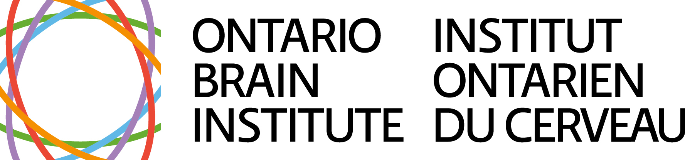

Created by and for caregivers of loved ones with multiple mental health conditions. This map is non-linear — wherever you are in the journey, you are not alone, and help is available.
You could be at any point in the spiral at once — returning to getting unstuck while you're already well into the emotional journey. The shape is deliberate: a caregiving journey loops, but it also rises.
Each dot on the spiral is a theme. Click one to open it.
This map was co-designed with caregivers and clinicians. Each theme links to resources gathered across partner organizations — from peer-led groups to clinician conversation guides.
Download the full map (PDF)
Supported by the Ontario Brain Institute